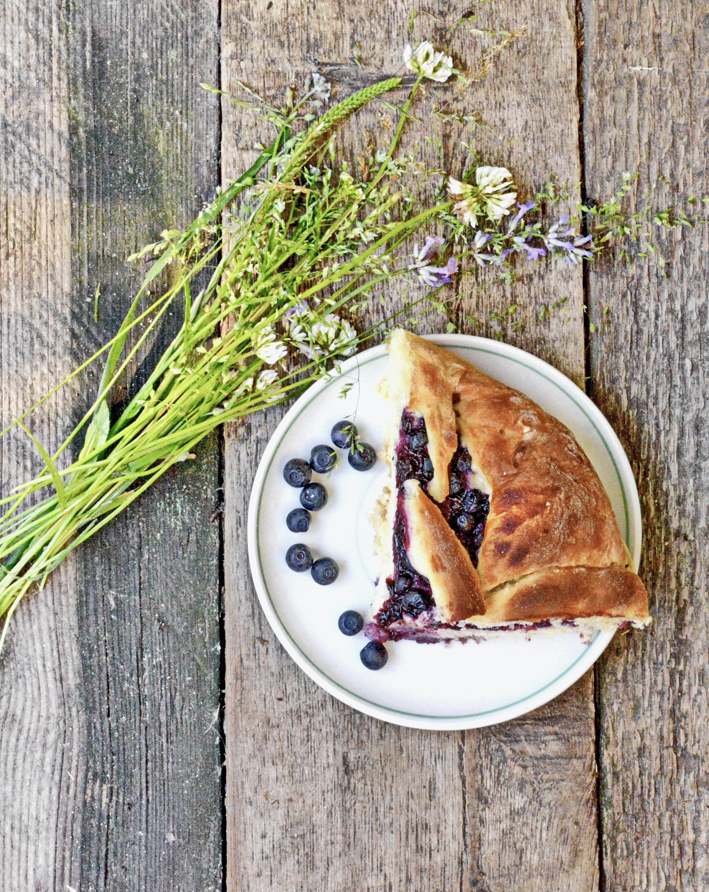

Blueberry pie

How to prepare a tasty Blue barry pie
Are you as excited about this as I am?
You can have this incredible hummus now-i
not tomorrow! No chickpea peeling required.
Ingredients
- 1 ¾ cups plus 1 teaspoon white whole wheat flour or regular whole wheat flour
- 1 teaspoon baking powder
- ½ teaspoon baking soda
- ½ teaspoon fine sea salt
- ¼ teaspoon ground cinnamon
- ½ cup maple syrup or honey
- 6 tablespoons melted butter
- 2 eggs, preferably at room temperature
- ⅔ cup buttermilk*
- 2 teaspoons vanilla extract
- 3 cups blueberries, fresh (1 ½ pints) or frozen, divided